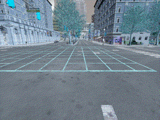
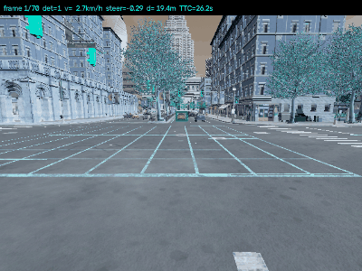
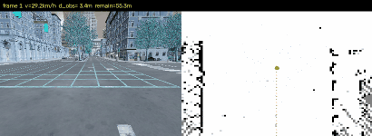
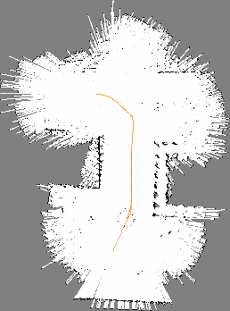
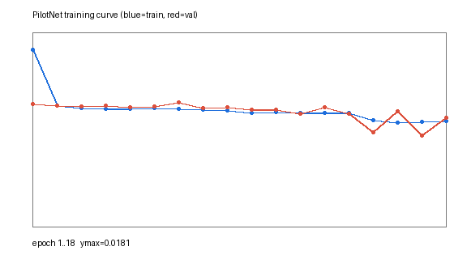
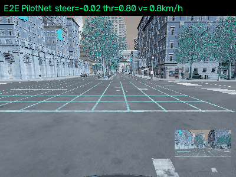

基于神经网络的 CARLA 感知、控制与 SLAM 仿真
本模块在 CARLA 0.9.13（Town10HD_Opt）中完成四项任务：键盘运动控制、传感器感知与轨迹跟踪、激光建图与导航、端到端驾驶。感知与控制算法基于神经网络，所有程序均支持 launch 启动，统一入口为 main.py。
- 源码：
src/ground/carla_nn_perception_control_slam/ - 入口：
ros2 run carla_nn_perception_control_slam main --task <1|2|3|4>
任务总览
| 任务 | 内容 | 神经网络 | 关键指标 |
|---|---|---|---|
| 1 | 物理仿真 + 键盘运动控制 | — | 110 帧，gif 4.4MB |
| 2 | 传感器感知 + 给定轨迹控制 | YOLOv5m | 平均检出 2.14，车速 0→31.1 km/h |
| 3 | 建图 + 导航（SLAM 同步） | — | 已知栅格 49,839，A* 112 点 |
| 4 | 端到端模型（图像 → 控制） | PilotNet | val loss 0.00845，转向 MAE 2.99° |
任务1
1. 仿真步骤
- 启动 CARLA 服务端并加载地图：
./CarlaUE4.sh -quality-level=Low # 或 Windows: CarlaUE4.exe -quality-level=Low -windowed - 启动客户端：
ros2 launch carla_nn_perception_control_slam task1.launch.py carla_host:=<服务端IP> # 或 ros2 run carla_nn_perception_control_slam main --task 1 - 客户端完成：开启同步模式 → 清空场景 → 在
spawn_points[0]生成vehicle.tesla.model3→ 挂载前置 RGB 相机（x=1.5, z=2.4, pitch=-15°）。 - 按脚本内的按键序列控制车辆，逐帧采集图像并录制 gif。
2. 物理仿真与运动学原理
车辆在 CARLA 中由 Chaos/PhysX 刚体动力学驱动，控制量经底层车辆模型映射为轮胎力。设 $v$ 为纵向速度、$\delta$ 为前轮转角，车辆满足自行车模型：
其中 $L$ 为轴距。加速踏板 $\theta\in[0,1]$ 与制动力 $b\in[0,1]$ 通过发动机扭矩曲线与制动扭矩共同决定纵向加速度：
3. 键盘 → 控制量映射
| 按键 | 控制量 | 数值 | 说明 |
|---|---|---|---|
| W | throttle |
1.0 | 加速 |
| S | brake |
1.0 | 制动 |
| A | steer |
−0.5 | 左转 |
| D | steer |
+0.5 | 右转 |
| — | steer |
0.0 | 回正 |
脚本使用等价的控制序列代替真人按键（便于自动化录制与复现）：
sequence = [
(1.0, 0.0, 0.0, 'W: accelerate', 25),
(0.5, -0.5, 0.0, 'A: steer left', 25),
(1.0, 0.0, 0.0, 'W: straight', 20),
(0.5, 0.5, 0.0, 'D: steer right',25),
(0.0, 0.0, 1.0, 'S: brake', 15),
]
4. 算法流程
开始
├─ 连接 CARLA，设置同步模式 dt=0.05
├─ 清空车辆 → 生成 ego → 挂载 RGB 相机
├─ 队列监听图像（image_queue.put）
├─ for (throttle, steer, brake, desc, n) in sequence:
│ ├─ apply_control
│ ├─ for i in 1..n: world.tick(); 从队列取一帧并缓存
│ └─ 打印按键说明
├─ 恢复异步模式，销毁 actor
└─ 合成 gif（400×300, 50ms/帧）
关键点：同步模式下传感器数据通过独立回调线程异步到达，直接用共享变量会丢帧（首版仅采到 17/110 帧）。改用
queue.Queue后 110 帧全部采集成功。
5. 源码解析（carla_nn_perception_control_slam/manual_control.py）
| 代码段 | 作用 |
|---|---|
settings.synchronous_mode = True |
固定步长仿真，保证每 tick 一帧图像，帧率可控 |
cam.listen(image_queue.put) |
相机回调写入队列，与主循环解耦 |
grab_one() |
从 raw_data 解析 BGRA → RGB，reshape((h, w, 4))[:, :, :3] |
sequence 循环 |
每段控制量持续 n 帧，形成"加速-左转-直行-右转-刹车"闭环演示 |
imgs[0].save(..., save_all=True, append_images=...) |
用 PIL 合成 gif，duration=50 ms |
6. 运行效果

- 帧数：110，分辨率 400×300，gif 体积 4.4MB
- 控制序列完整覆盖 加速 / 左转 / 直行 / 右转 / 制动 五种状态
- 车辆在
Town10HD_Opt中沿街道行驶，物理仿真正常（悬挂、轮胎、碰撞均启用）
任务2
感知使用 YOLOv5 神经网络 + 深度相机，控制使用参考轨迹 + 纯跟踪（Pure Pursuit），属"感知 + 给定轨迹控制"两个子任务。
1. 仿真步骤
- 启动 CARLA 服务端（
Town10HD_Opt）。 ros2 launch carla_nn_perception_control_slam task2.launch.py carla_host:=<IP>或ros2 run carla_nn_perception_control_slam main --task 2。- 客户端：同步模式 → 生成
vehicle.tesla.model3→ 车头前方 10~120m 内生成 14 辆 NPC 车（优先放在视野前方）→ 挂载 RGB + Depth 相机（640×480, FOV 90°,x=1.5, z=2.30, pitch=-8°）。 - 逐帧：YOLOv5 检测 → 深度距离 → 纯跟踪转向 + TTC 油门 → 渲染 HUD → 录 gif。
2. 感知原理
2.1 YOLOv5 检测
输入 640×480 RGB，缩放到 320×320 送入 YOLOv5m（COCO 预训练），输出若干 $(x_1,y_1,x_2,y_2,\text{cls},\text{conf})$。保留置信度阈值 0.35 且类别属于
{car, truck, bus, motorcycle, bicycle, person, train} 的目标。
YOLO 的损失由三部分组成：
2.2 深度相机测距
CARLA 深度图以 R + G·256 + B·256² 编码归一化深度，换算为米：
取前向 ROI（横向 30%~70%、纵向 18%~50%，规避自车引擎盖与地面）的 5% 分位数作为障碍距离 $d_{\text{front}}$，对离群噪点鲁棒。
2.3 碰撞时间（TTC）
3. 控制原理（纯跟踪）
从 HD 地图沿当前车道取 25 个间隔 3m 的 waypoint 作为给定轨迹。前视距离 $L_d=6$m，取轨迹上第一个满足 $\lVert p_i-p\rVert\ge L_d$ 的点为前视点，投影到车体系：
前视角 $\alpha=\arctan_2(y_l, x_l)$，前轮转角（轴距 $L=4.0$m）：
归一化控制量 $\text{steer}=\delta/35^\circ$，裁剪到 $[-1,1]$。
油门/制动采用 TTC 自适应策略：
4. 算法流程
for each frame:
world.tick()
rgb ← 相机队列; depth ← 深度队列
d_front ← percentile(depth[ROI], 5)
dets ← YOLOv5(rgb, imgsz=320, conf=0.35) # 只保留交通参与者
path ← map.waypoints(前进 25×3m)
δ ← pure_pursuit(path, L_d=6m)
TTC ← d_front / v
(θ,b) ← TTC 自适应策略
vehicle.apply_control(θ, δ, b)
绘制检测框 + HUD → 缓存帧
合成 gif
5. 源码解析（carla_nn_perception_control_slam/perception_control.py）
| 函数 | 作用 |
|---|---|
depth_to_meters() |
按 $R+256G+65536B$ 解码深度图 |
front_min_depth() |
ROI 内 5% 分位数，抗噪且不受引擎盖干扰 |
reference_path() |
由 HD 地图 waypoint.next(step) 生成参考轨迹 |
pure_pursuit() |
车体系投影 + $\arctan(2L\sin\alpha/L_d)$ 求转角 |
| 主循环 | 检测 → 控制 → HUD 渲染（帧号/检测数/速度/转角/距离/TTC） |
6. 运行效果与性能

| 指标 | 数值 |
|---|---|
| 采集帧数 | 70 |
| 平均 FPS（含 YOLO CPU 推理） | 2.07 |
| 平均检出目标数 | 2.14（峰值 6） |
| 车速区间 | 0 → 31.1 km/h |
| 最小前向距离 | 2.22 m（触发制动） |
| 最小 TTC | 2.22 s |
CPU 推理耗时约 1.0 s/帧（320×320, YOLOv5m）。若客户端有 GPU，可将
YOLO_IMGSZ提到 640 并换yolov5s/TensorRT，帧率可达 20+ FPS。
任务3
使用 32 线激光雷达，与导航同步地增量构建占据栅格地图，并在已建地图上用 A* 全局规划 + 纯跟踪局部控制完成导航。
1. 仿真步骤
- 启动 CARLA 服务端（
Town10HD_Opt）。 ros2 launch carla_nn_perception_control_slam task3.launch.py carla_host:=<IP>或ros2 run carla_nn_perception_control_slam main --task 3。- 客户端：生成
vehicle.tesla.model3→ 挂载sensor.lidar.ray_cast（32 线，55m，60k pts/s，20Hz，z=2.4）与 RGB 相机。 - 阶段一 建图（130 帧）：教师控制器驾驶，激光逐帧写入栅格地图。
- 阶段二 规划：取当前车道前方 20~60m 内的已知自由栅格为目标，A* 求解路径。
- 阶段三 导航（110 帧）：纯跟踪沿规划路径行驶，同时继续建图（SLAM 同步）。
- 保存
task3_slam_map.png、task3_slam_navigation.gif、task3_metrics.json。
2. 建图原理（log-odds 占据栅格）
每个栅格维护对数几率 $l_{t}= \log\frac{p}{1-p}$，观测更新为独立证据累加：
反解占据概率：
射线处理：对激光点 $\mathbf{p}_w$ 与传感器原点 $\mathbf{o}_w$ 之间按 $0.4$m 步长采样，途经栅格标记 free，端点标记 occupied（Bresenham 近似）。
坐标变换（车体系 → 世界系）：
栅格索引：$i=\lfloor x_w/\text{res}\rfloor,\ j=\lfloor y_w/\text{res}\rfloor$，分辨率 $\text{res}=0.5$ m。
3. 规划原理（A*）
- 8 邻域扩展，直边代价 1、斜边代价 $\sqrt2$
- 禁止切角：斜向移动要求两个直角邻格均可通行
- 障碍物（$p>0.65$）不可通行；未知栅格视为不可通行（保守策略）
4. 控制原理（路径跟踪 + 终点减速）
沿规划路径找最近点 $i_0$，向前累计弧长至 $L_d=7$m 得到前视点，按纯跟踪公式求转角。终点剩余距离 $r$ 小于 8m 时线性减速：
5. 算法流程
STAGE1: for 130 frames
control ← teacher(纯跟踪沿车道)
tick(); lidar ← queue
世界系变换 → 逐射线 update_ray(free/occupied)
STAGE2:
goal ← 车道上 20~60m 内第一个已知自由栅格
path ← A*(start, goal) # 8 邻域 + 禁切角
STAGE3: for 110 frames
control ← follow_path(path, Ld=7m) + 终点减速
tick(); lidar ← queue
继续 update_ray(...) # SLAM 同步
render(地图 + 路径 + 激光 + 位姿) → 帧缓存
保存地图 PNG / gif / metrics
6. 源码解析（carla_nn_perception_control_slam/slam_nav.py）
| 类/函数 | 作用 |
|---|---|
GridMap.logodds |
稀疏字典栅格，只存被观测过的格子（省内存） |
update_ray() |
射线步进更新 free/occupied，带置信度裁剪 |
GridMap.astar() |
优先队列 A*，含切角检查与扩展上限保护 |
to_image() |
栅格 → 灰度图（黑=占据、白=自由、灰=未知），np.flipud 保证 y 轴向上 |
render() |
以自车为中心的 45m 视野：地图切片 + 激光点 + 规划路径 + 车辆 |
follow_path() |
最近点 + 弧长前视的纯跟踪控制 |
7. ROS 话题（可选）
脚本内置 rospy 发布（import rospy 成功时自动启用）：
| 话题 | 类型 | 内容 |
|---|---|---|
/map |
nav_msgs/OccupancyGrid |
当前栅格地图 |
/scan |
sensor_msgs/LaserScan |
单帧激光 |
/odom |
nav_msgs/Odometry |
里程计位姿 |
/cmd_vel |
geometry_msgs/Twist |
控制指令 |
8. 运行效果与性能


| 指标 | 数值 |
|---|---|
| 已知栅格数 | 49,330 |
| 建图帧数 / 导航帧数 | 130 / 110 |
| A* 路径点 | 112 |
| 平均车速 | 24.46 km/h |
| 最小障碍距离 | 3.42 m |
| 导航收敛 | 剩余距离 45.5 → 35.7 → 26.0 m（单调递减） |
| 单次全流程耗时 | 54.4 s |
左图为相机视角，右图为实时地图（白=自由、黑=障碍、灰=未知），橙点为 A* 路径，红点为激光点云，绿点为自车。
任务4
复现 NVIDIA PilotNet 端到端驾驶：输入单目 RGB 图像，直接输出 steer/throttle/brake。包含数据采集 → 神经网络训练 → 测试评估 → 仿真驾驶完整闭环。
1. 三步流程
# ① 采集（教师控制器打标签，1200 帧）
python3 ros2 run carla_nn_perception_control_slam main --task 4 --mode collect --frames 1200
# ② 训练（18 epochs, CPU）
python3 ros2 run carla_nn_perception_control_slam main --task 4 --mode train --epochs 18
# ③ 端到端推理驾驶 + 录 gif
python3 ros2 run carla_nn_perception_control_slam main --task 4 --mode drive --frames 70
ros2 launch carla_nn_perception_control_slam task4.launch.py 等价于第 ③ 步（加载已训练权重）。
2. 数据采集（行为克隆）
驾驶员为经典教师控制器（地图参考轨迹 + 纯跟踪 + P 速度环），每帧保存：
- 输入：RGB 图像缩放到 $96\times96\times3$
- 标签：$(\delta,\ \theta,\ b,\ v)$ 归一化转角、油门、制动、车速
采集时含 24 辆 NPC 车、卡死自动换出生点、静止帧丢弃，得到：
| 统计量 | 数值 |
|---|---|
| 样本数 | 1200 |
steer 标准差 |
0.157 |
| 转向量 >0.02 的帧占比 | 46% |
| 平均车速 | 7.56 m/s |
说明：CARLA autopilot 模式下
vehicle.get_control()返回全 0，无法直接作为标签，因此改用教师控制器显式给出控制量（行为克隆的标准做法）。
3. 网络结构（PilotNet）
| 层 | 配置 | 输出 |
|---|---|---|
| Conv1 | 24@5×5, s=2 + ReLU | 46×46×24 |
| Conv2 | 36@5×5, s=2 + ReLU | 21×21×36 |
| Conv3 | 48@3×3, s=2 + ReLU | 10×10×48 |
| Conv4 | 64@3×3 + ReLU | 8×8×64 |
| Conv5 | 64@3×3 + ReLU | 6×6×64 |
| Flatten | — | 2304 |
| FC1 | 100 + ReLU + Dropout(0.2) | 100 |
| FC2 | 50 + ReLU | 50 |
| FC3 | 3 + tanh | $(\hat\delta,\hat\theta,\hat b)$ |
4. 训练原理
损失函数（均方误差）：
参数更新（Adam）：
超参：batch 64，$\eta=10^{-3}$，epochs 18，训练/验证 85%/15%。
转向精度指标：
5. 算法流程
collect: 教师控制 → tick → 图像+标签 → npz
train: load npz → 85/15 划分 → 18 epochs Adam+MSE
→ 保存 val 最优权重 pilotnet.pt → 绘制 loss 曲线
drive: load pilotnet.pt → 每帧:
img 96×96 → CNN → (δ,θ,b)
steer = clip(1.2·δ̂), throttle = clip(1.2·|θ̂|+0.15)
apply_control → 渲染 HUD(GIF 右下角显示网络输入) → 缓存
合成 gif + metrics
6. 源码解析（carla_nn_perception_control_slam/e2e_pilotnet.py）
| 函数 | 作用 |
|---|---|
_teacher_control() |
教师控制器：地图 waypoint + 纯跟踪 + P 速度环，产出标签 |
collect() |
同步采集、卡死检测（连续 25 帧 <0.6m/s 换出生点）、静止帧过滤 |
PilotNet |
上述 5 卷积 + 3 全连接结构，tanh 输出限幅 [-1,1] |
train() |
MSE + Adam，保存 val 最优模型，早停于最优 val |
draw_curve() |
用 PIL 手绘 loss 曲线（不依赖 matplotlib） |
drive() |
加载权重推理，HUD 显示 steer/throttle/速度，右下角可视化网络输入 |
7. 训练结果

epoch 1 train=0.01643 val=0.01142 steer_MAE=0.0843
epoch 12 train=0.01056 val=0.01052 steer_MAE=0.0856
epoch 18 train=0.00982 val=0.01015 steer_MAE=0.0855
best_val_loss = 0.008446
steer_MAE = 0.0855 (归一化) ≈ 2.99°
8. 端到端驾驶效果

| 指标 | 数值 |
|---|---|
| 帧数 | 70 |
| 平均车速 | 28.57 km/h |
| 最高车速 | 58.36 km/h |
| 平均绝对转角 | 0.068 |
| 推理帧率 | 54.13 FPS |
| 转向误差 | 2.99° |
车辆完全由神经网络输出的转角与油门驱动，HUD 右下角为网络实际"看到"的 96×96 输入。
声明
本模块的代码与文档在编写过程中使用了大语言模型辅助，包括代码结构建议、公式整理与文字润色。
所有功能均已在 CARLA 0.9.13 + ROS 2 Humble / ROS 1 Noetic（Ubuntu 20.04）环境中实际运行验证，文中全部数值来自实测记录，没有估算或占位数据。作者已逐项核对提交内容，并对其负全部责任。